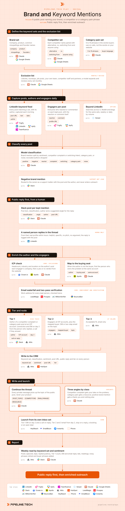

Play 26 · Social signals
Brand and Keyword Mentions
Give this to your agent
Install the Pipeline.tech "Brand and Keyword Mentions" outbound play. Fetch https://raw.githubusercontent.com/pipeline-tech/plays/main/core/SKILL.md and https://raw.githubusercontent.com/pipeline-tech/plays/main/plays/brand-keyword-mentions/SKILL.md, save them as ~/.claude/skills/pipeline-outbound-core/SKILL.md and ~/.claude/skills/pipeline-brand-keyword-mentions/SKILL.md, then run /pipeline-brand-keyword-mentions.
Paste into Claude Code. It installs the shared core rules plus this play, then runs it as /pipeline-brand-keyword-mentions.

Workflow, generated from the skillOpen full size
Someone discussing your category, your competitor or you in public is warmer than any cold list, because they raised the topic themselves where their peers can see. The first move is a useful public reply from a real person, since that thread is public proof that you know the problem. The private follow-up two days later is then a continuation, not an interruption.
Load pipeline-outbound-core first. Where a step says "apply core", follow that section of the core skill.
Inputs
Ask for these before step 1, and save them to ./pipeline-plays.config.json:
- The ICP in one paragraph: industries, headcount band, geography, the problem you solve, who owns it.
- Brand, product and founder names, and the three to five competitors that come up on sales calls.
- Who replies publicly, with LinkedIn profile URLs and the hours they cover.
- Stack answers from core section 1, plus one resource per category pain (a post, a template, a short video) shareable without a form.
Steps
1Define the keyword sets and the exclusion list
ToolsClaudeGoogle Sheets
- Write three sets in a sheet. Brand: company, products, misspellings people actually type, founder names. Competitors: each name alone and paired with "alternative", "vs", "switching from" and "anyone using". Category pain: 5 to 10 phrases from call transcripts, in the buyer's words.
- Write the exclusion list next to them: listicle and roundup patterns, job posts, your own team, competitor employees, known partners. The classifier in step 3 reads it.
- Monthly, a model proposes additions and retirements from the posts captured since the last review; the user approves every change.
2Capture posts, authors and engagers daily
ToolsTrigifyLinkedInApify (option)Teamfluence (option)Serper (option)Google Sheets
- Run the three sets as daily keyword feeds in Trigify; Apify or Teamfluence cover the same job on LinkedIn if the user already has one. Serper searches X, Reddit and blogs with the same sets.
- For every post store the URL, text, date, author, and each engager with what they did: reaction type or comment text. The comment is often the real signal, so never store only a count. One row per post and one per engager, keyed to the post URL.
3Classify every post
ToolsClaudeSlack
- A model reads each post against the exclusion list and labels it: brand mention (positive, negative or neutral), competitor complaint or switching intent, category pain, or noise. Noise and excluded authors are dropped and logged.
- A negative brand mention goes to the owner in Slack with the post and author. It is handled as support by whoever owns that relationship and never loaded into a sequence.
- Store classification and sentiment on the post row; engagers inherit both.
4Public reply first, from a human
ToolsSlackLinkedInClaude
- Every kept post lands in a Slack channel with the classification, the author and a one-line suggested angle: a question to answer, a resource that fits, or a detail worth adding.
- A named person from the inputs replies in the thread from their own profile within hours, while the post is live. The reply answers or adds something specific, never pitches and never argues; when a mention gets a fact wrong, the correction is one calm sentence or nothing.
- Log the reply text and time on the post row. Nothing private goes out until it is filled.
5Enrich the author and the engagers
ToolsOcean.ioApolloClaudeLeadMagicProspeoMillionVerifierBounceBan
- Resolve each author and engager to a company, check headcount, industry and location, and get a yes or no ICP verdict from the website. Apply core: exclusions.
- When the author is not the buyer, keep them as the conversation and map the account to its buying seat per core section 4. The author gets the reply and the DM; the buyer gets the email.
- Apply core: enrichment, then core: verification.
6Tier and route
ToolsClaudeAttioHubSpot (option)Slack
- Tier 1: the author of a competitor complaint or category-pain post at an ICP account. The person who replied publicly sends the connection and DM on day 2, and calls if they answer.
- Tier 2: engagers at ICP accounts and the mapped buyer. HeyReach DM or two-step email on the post topic.
- Tier 3: acceptable fit, email only.
- Write every person to the CRM with play name, keyword set, sentiment, post URL, public reply and tier.
7Write and launch
ToolsClaudeHeyReachEmailBisonInstantly (option)Phone
- Apply core: copy and send rules.
- Every private message continues the public thread: name their point, add one thing the public reply did not cover, make one ask. Three variants by class. A competitor complaint gets your take on the problem behind it; the switch offer comes only after they reply. A category-pain post gets the matching resource, no form. A positive brand mention gets a thank-you and nothing else unless they ask.
- Never "I saw you mentioned us" on anything negative; the public reply is why you are in touch.
- Show the three variants plus one threaded nudge to the user before upload. Upload with
{POST_TOPIC},{COMPETITOR},{PAIN_PHRASE},{RESOURCE}; sends start on day 2 from the play's own inbox set. Stop on a reply, a booking or an open deal.
8Report
ToolsAttioSlackClaude
- Weekly, by keyword set and sentiment: posts captured, kept, replied publicly, Tier 1 count, DM and email reply rate, meetings.
- Retire phrases whose posts are mostly noise and add the ones buyers actually use; both feed the monthly review in step 1.
- Apply core: credits and handoff.
Guardrails
- The public reply comes before any private touch. No DM, email or call until the reply is logged on the post.
- A negative brand mention is a support issue, not a lead. It goes to the owner and never into a sequence.
- Never argue in public and never pitch in the public reply. It helps or it stays unwritten.
- One person at most once per 60 days across all social plays.
- Scope: third-party posts about your brand, your competitors or the category pain, by people who are not you and not the competitor. Engagers on competitor voices' posts belong to Competitor Post Engagers, engagers on your own or your creators' posts to Content Engagement, review-site and stack data to Competitor Complaints.
Example run
User: "/pipeline-brand-keyword-mentions for our outbound agency, B2B SaaS 50 to 500 people in the US, five competitors, two of us can reply publicly"
- 6 brand terms, 25 competitor phrases, 8 category-pain phrases, a 14-pattern exclusion list; confirmed Trigify, Ocean.io, Attio, HeyReach, EmailBison and Slack.
- Month one: 1,140 posts captured, 612 on LinkedIn and 528 across X, Reddit and blogs; 3,870 engagers stored with reaction or comment.
- 41 brand mentions (29 positive, 8 neutral, 4 negative routed to the owner), 96 competitor complaints or switching intent, 203 category pain, 800 noise or excluded.
- 340 posts to Slack, 318 replied publicly, median 3 hours; 22 skipped as too old or already answered.
- 97 authors and 412 engagers at ICP accounts after exclusions; 38 accounts mapped to a buying seat; 489 addresses found, 441 verified valid, 23 catch-all in a separate campaign.
- 71 Tier 1 authors, 450 Tier 2, 118 Tier 3; all written to Attio with keyword set, sentiment and post URL.
- Three variants approved; 71 DMs on day 2, 31 replies, 9 calls; 568 emails, 61 replies; 14 meetings booked.
- Retired 2 pain phrases that pulled job posts, added 3 that appeared in 40 kept posts.
Run this play with usPipeline.tech runs Brand and Keyword Mentions end to end for clients: infrastructure, lists, copy, sends and replies.
Book a callView on GitHub